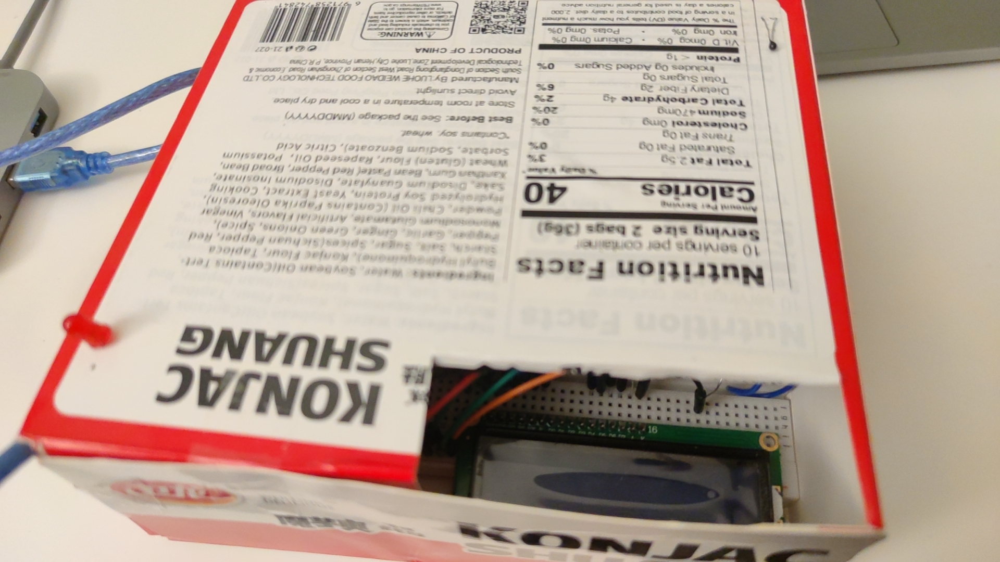

Joseph Zhang's Final Project!
Concept
For this project I made a computer CPU cooling system, which can report the current CPU temperature in both centigrade and Farenhait, and it can also starts the cooling fan with different speed levels if the temperature is getting so high. After the teperature is over the dangerous threshold, the warning light will be turned on.
Demo Video
https://www.youtube.com/watch?v=NFGIm9veJMwTechnical Writeup
These are all the materials I used: Arduino board, breadboard, LCD, thermistor, 1kΩ resistors, capacitor, motor fan, transister, LED, 9V battery, diode, potentiometer.
Below are my schematics. I used a 1kΩ resistor for the red LED. According to the computation, (5V - 1.8V) / 1kΩ < 30mA, so the LED is safe. I picked a 1kΩ resistor for the LCD display to limit current through the backlight.
Circuit Tutorial
Here is the tutorial to teach you how to make your own cooling system. Firstly, you may need to use a thermistor and a 1kΩ resistor to make a voltage divder to help you measure the voltage value. Then we can convert that value to human readable temperature by using mathematical computations in the Arduino code below. We also need a transistor to limit the current from the battery. To make sure the random electromagnetic noise from the motor will not affec the LCD, we need to connect a capacitor in parallel with the motor fan. The diode here is to prevent the fly-back issue, otherwise it would be a heating system.

Code
If you want to learn about how I made this by Arduino, please find the Arduino code below!